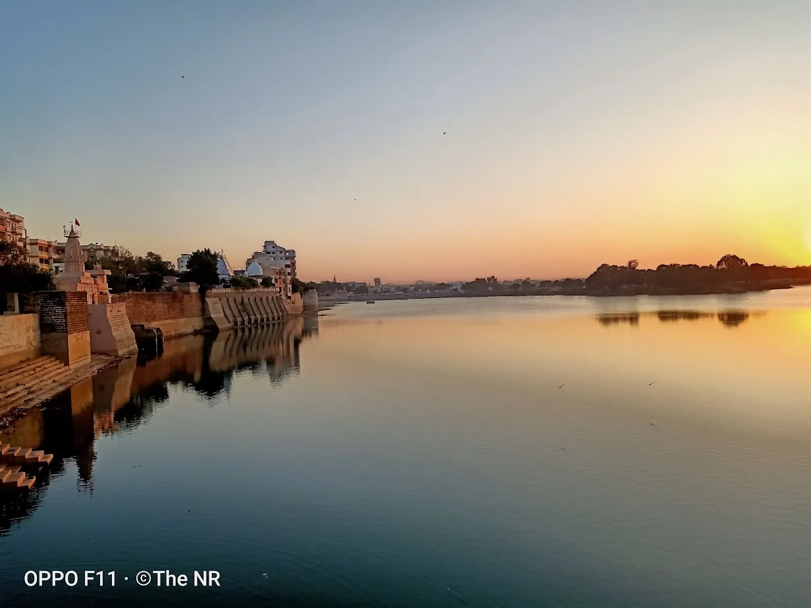
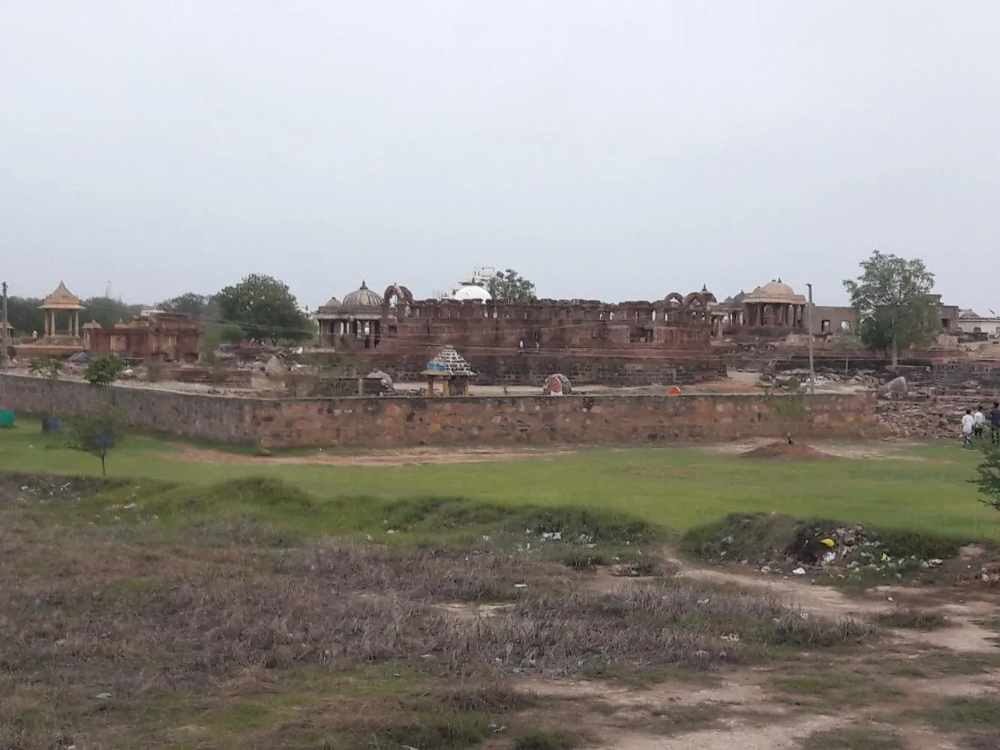
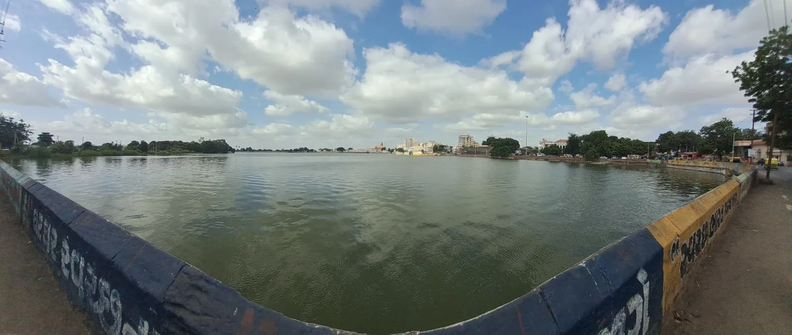

Hanuman Tekri at Kodki is a charming hilltop Hanuman temple located approximately 10 kilometers from Bhuj, offering devotees and sightseers a dual experience of spiritual connection and natural beauty. "Tekri" in Gujarati means small hill, and true to its name, the temple sits atop an elevated point providing excellent panoramic views of the surrounding countryside. Dedicated to Lord Hanuman, the powerful monkey deity revered for strength and devotion, the temple attracts regular worship throughout the year, with particularly large gatherings on Tuesdays and Saturdays (considered auspicious for Hanuman worship). What makes this site special is the combination of religious significance and spectacular sunset viewing opportunities. As evening approaches, the hilltop transforms into a peaceful retreat where the rhythmic chiming of temple bells blends with the natural serenity of sunset colors painting the sky. The location near Kodki village adds an authentic rural charm, making it a worthwhile short excursion from Bhuj for both spiritual seekers and photography enthusiasts.
Who Should Visit
- Devotees: Visit this peaceful Hanuman temple for prayers, darshan, and spiritual blessings in a serene hilltop setting.
- Sunset Enthusiasts: Experience breathtaking sunset views combined with the spiritual atmosphere of a working temple.
- Photographers: Capture temple architecture against sunset backdrops and panoramic rural landscapes.
- Local Culture Seekers: Observe authentic village devotional practices and interact with friendly local devotees.
How to Reach
- From Bhuj (10km): Drive towards Kodki village via local roads. Takes about 20 minutes by car or taxi (₹300-600 return).
- Best Mode: Private vehicle or two-wheeler for flexibility. Some walking/climbing required to reach the hilltop temple.
- Climb Details: Short, easy climb of about 10-15 minutes with steps. Manageable for most age groups.
- Best Time: Evening visits (4-6 PM) allow temple darshan followed by sunset viewing from the hilltop.
Temple & Viewpoint Features
Spiritual meets scenic

ImageHanuman Mandir
The hilltop temple dedicated to Lord Hanuman features traditional architecture and an active worship community.
Panoramic Sunset
The elevated position offers unobstructed 180-degree views perfect for watching the sun set over rural Kutch.
Sacred Climb
The climb up temple steps is considered a devotional act, with beautiful views emerging gradually as you ascend.
Rural Landscape
View Kodki village and surrounding farmlands from above, offering insight into traditional Kutch rural life.
Visitor Guidelines
Temple Etiquette
Remove shoes before entering. Dress modestly. Photography inside temple may be restricted—ask before clicking.
Offerings
Devotees typically offer coconuts, flowers, and sindoor (vermillion). Available at small shops near temple base.
Best Days
Tuesdays and Saturdays see maximum devotees and special aarti. Weekdays are quieter for peaceful visits.
Sunset Timing
Arrive by 5:00-5:30 PM to complete temple visit and secure a good sunset viewing spot on the hilltop.
What to Experience
- Temple Darshan: Offer prayers at the Hanuman shrine and receive blessings from the resident priest.
- Evening Aarti: If visiting on Tuesday or Saturday, participate in the vibrant evening prayer ceremony.
- Sunset Photography: Capture the temple silhouette against colorful sunset skies and panoramic landscape views.
- Peaceful Moments: Find quiet spots on the hilltop for meditation and reflection after temple visit.
Nearby Attractions
- Kodki Village: Explore authentic village life, interact with locals, and see traditional Kutchi homes.
- Bhuj City: 10km - Return to explore palaces, museums, and evening markets.
- Rudramata Dam: 8km - Combine with another nature spot for a full afternoon of sightseeing.
When to Visit
November to February (Winter): Best season. Pleasant evening temperatures (18-25°C),
clear skies, and comfortable for climbing. Sunset around 6:00-6:30 PM.
Tuesdays &
Saturdays: Auspicious days for Hanuman worship. Expect more devotees, vibrant energy,
and special aarti ceremonies.
March to October (Summer/Monsoon): Hot summers
require early evening visits. Monsoon brings lush greenery but slippery steps—exercise caution.
Location & Gallery

